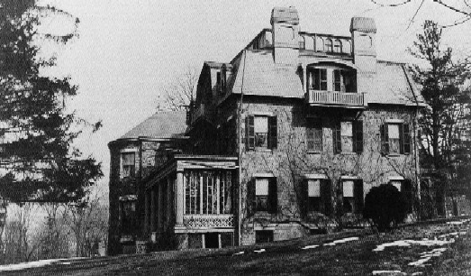

Riverdale, New York
1901-1903
"That strange, deep, nameless influence, which, once felt, cannot be forgotten...once felt, leaves always behind it a
restless longing to feel it again...a longing which is like homesickness; a grieving, haunting yearning which will
plead, implore, and persecute till it has its will." Mark Twain, A Tramp Abroad
"Wave Hill"

picture courtesy of Mark Twain
"...we have taken Mr. Appleton's furnished house at Riverdale on the Hudson, 25 minutes out of town by
rail." letter to Henry Huttleson Rogers, 7.9.1901, Saranac Lake, NY, as quoted in Mark Twain's Letters to
Henry Huttleson Rogers
"Then we took a house in Riverdale-on-the-Hudson. It was a large house, and again the housekeeping
burden was heavy." Autobiography, 355
Back to London | On to Redding